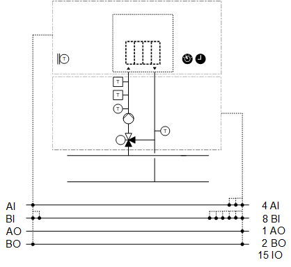
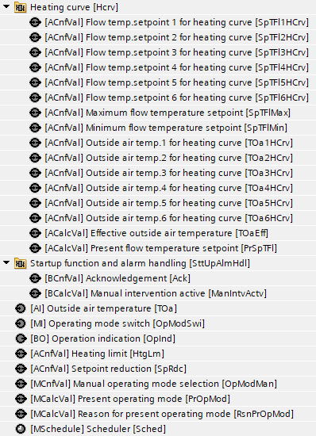
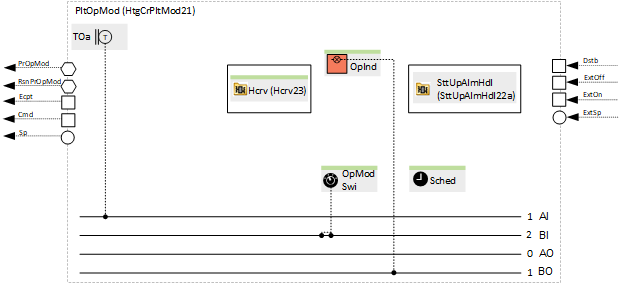
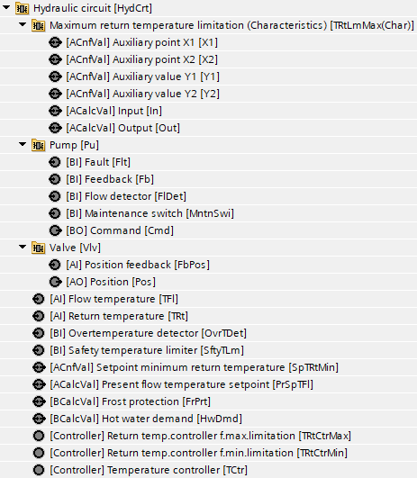
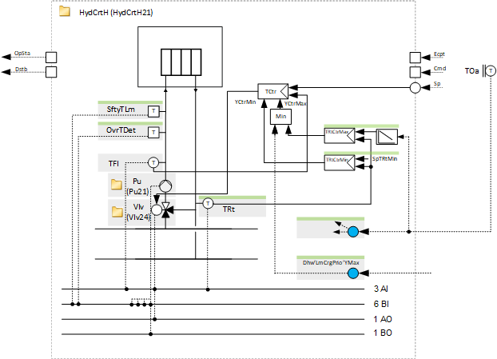
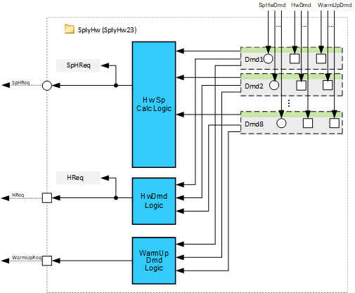

[HtgCr21x] Heating circuit, precontrol
Name: [HtgCr21x] Heating circuit, precontrol
Library hierarchy: Plants

HtgCr21x can be used as a simplified heating circuit for radiators (with a linear heating curve, a setpoint reduction defined by a scheduler, and without room sensor).
Plant operating modes
- Off
- On
Plant diagram

Main functions | Main components |
|---|---|
|
|
Program blocks
Plant mode determination | |
[HtgCrPltMod21] Plant operating mode determination for heating circuit, for precontrol | |
 |  |
Hydraulic circuit heating | |
[HydCrtH21] Hydraulic circuit for heating, flow temperature control | |
 |  |
Supply chain for hot water (Optional) | |
|  |